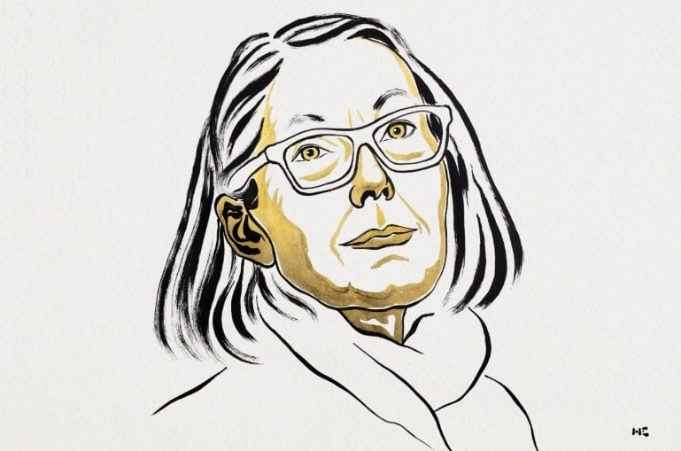

수상자: 앤 카슨(Anne Carson)
주요 공로: 고전 전통과의 유희적인 대화를 통해 현대 문학을 위한 새로운 형식을 창조한 공로.
이를 통해 시·산문·번역의 경계를 넘나드는 독창적인 작품 세계를 구축하였으며, 고전 문학과 현대 문학을 새롭게 연결하였다.
특히 고대 그리스 문학에 대한 깊은 이해를 바탕으로 현대적 문학 형식을 창조하고, 고전 전통을 현대 독자들에게 새로운 방식으로 전달한 점이 높이 평가되었다.
또한 시인·수필가·번역가·고전학자로 활동하며 문학 장르 간의 경계를 확장하고, 고전 문학과 현대 문학의 새로운 접점을 제시하였다.
이를 통해 현대 문학의 형식과 표현 가능성을 넓힌 공로를 인정받아 2026년 노벨문학상을 수상하였다.
대표작
Autobiography of Red (빨강의 자서전, 1998)
고대 그리스 신화를 현대적인 서사로 재해석하여 시와 소설의 경계를 허문 그녀의 가장 독창적인 운문 소설
The Beauty of the Husband (남편의 아름다움, 2001)
탱고 형식을 빌려 상실과 욕망을 탐구한 시집으로, 여성 최초로 영국의 권위 있는 'T.S. 엘리엇 상'을 수상
Norma Jeane Baker of Troy (2019)
고대 그리스 비극 에우리피데스의 《헬레네》와 현대의 아이콘 마릴린 먼로의 삶을 결합하여 신화와 현대적 서사를 절묘하게 엮어낸 작품
하루키 눈물